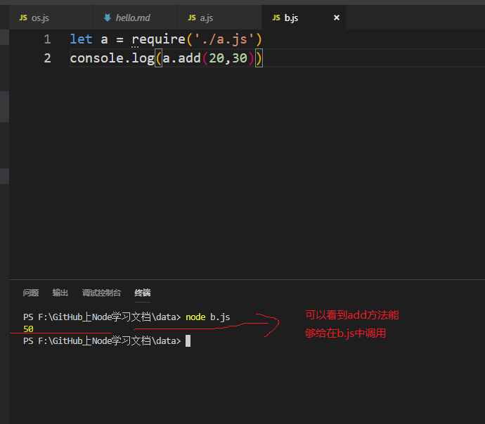
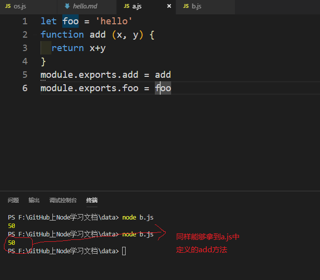

Node中，每个模块都有一个exports接口对象，我们需要把公共的方法或者字符串挂载在这个接口对象中，其他的模块才可以使用。
Node.js中只有模块作用域，默认两个模块之间的变量，方法互不冲突，互不影响，这样就导致一个问题，我们怎样使用加载进来的模块中的方法呢？这就需要在另外一个模块
exports接口对象中挂载模块中公共的方法。
我们在a.js中有以下代码：
let foo = 'hello'
function add (x, y) {
return x+y
}
exports.add = add // 在接口对象中挂载公共的add方法
exports.foo = foo // 在接口对象中挂载foo属性此时，在b.js中如果需要使用add方法,只需引入a.js即可。b.js代码如下：
let a = require('./a.js') // a.js和b.js在同级目录下，注意：同级目录必须加“./”
console.log(a.add(20,30)) // 使用a.js中的add方法最后我们看到的效果如下：

相反，如果我们没有在a.jsexports接口对象中挂载add方法，那么这里就得不到结果。
对于1中的例子，我们同样可以利用module.exports来写，只需把暴露的方式改成如下：
module.exports.add = add
module.exports.foo = foo最终得到的效果是一样的：

Node中每个模块都有一个module对象，module对象中的有一个exports属性为一个接口对象，我们需要把模块之间公共的方法或属性挂载在这个接口对象中，方便其他的模块使用这些公共的方法或属性。
Node中每个模块的最后，都会return: module.exports。
Node中每个模块都会把module.exports指向的对象赋值给一个变量exports，也就是说：exports = module.exports。
module.exports = XXX，表示当前模块导出一个单一成员，结果就是XXX。
如果需要导出多个成员时必须使用exports.add = XXX; exports.foo = XXX;或者使用module.exports.add = XXX; module.export.foo = XXX;。
本仓库是自己Node.js学习过程的真实记录，以后会每天更新一些新的知识点，希望可以对想要学Node.js的同学有一些帮助，欢迎star，你们的点赞是我更新的持久动力。同时如果你觉得本仓库中的一些知识点有错误也可以issue我，方便后期我订正！
本仓库同时在博客园和掘金更新，欢迎写博客的朋友一起学习交流。
博客园
掘金
GitHub